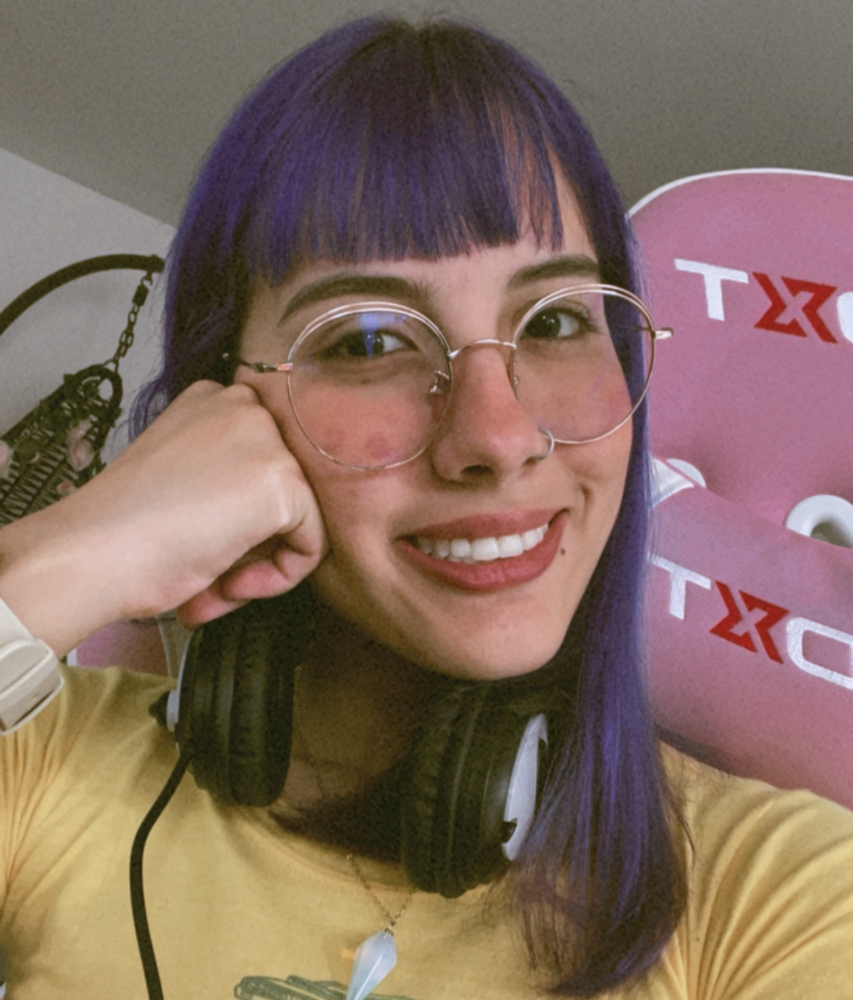

|  |
PAULINA OLAYAJUNIOR WEB DEVELOPER Unstoppable and constant apprentice. Since I was in school, I have loved to spend a lot of time navigating the Internet looking for new things to know and learn. At the beginning of 2022, I started to get interested in Web Development and all kind of stuff Software Engineering-related like programming and testing. I finished a FullStack JavaScript Bootcamp given by Digital House, which allowed me to have a better understanding of the development world. Nowadays, I'm focused on continue learning web development, and I want to get some experience building personal projects and getting a job as a junior in any company. I'm highly motivated to learn and work. |
CONTACTMaría Paulina Olaya Saldarriaga Email: molayasa.dev@gmail.com Phone: +57 3022158445 Location: Medellín, Colombia EDUCATIONLANGUAGES
|
EMPLOYMENTLeanTech S.A.SJunior Trainee, Mar. 2022 - June 2022 Medellín, Colombia LeanTech launched a program called Junior Developers Bootcamp (JDB). This was a program sponsored by Advent International whose purpose was to train junior developers for 4 months to incorporate them into their different projects. As a junior trainee, my main tasks were:
Emtelco S.A.S (Tigo/Une)Senior Experience Creator, June 2020 - Apr. 2021 Medellín, Colombia I was in charge of giving technical support for all kinds of customers with any doubt or problem with their services: Internet, t.v, and phone. I learned to use Zendesk and some other complex applications for providing this support. Skills & TechnologiesHTML5, CSS3, JavaScript, Git, Jira, Costumer Service, Agile Methodologies, SCRUM, Team Working ActivitiesWebDev & FriendsFullStack JavaScript Bootcamp for BeginnersMar. 2021 - Aug. 2021 This was a Bootcamp imparted for free by a group of developers from Medellin with high experience in web development and software engineering. They taught us a stack of technologies of common use nowadays: HTML5, CSS3, JavaScript (ES6), Node, React, and Responsive Web Design. |